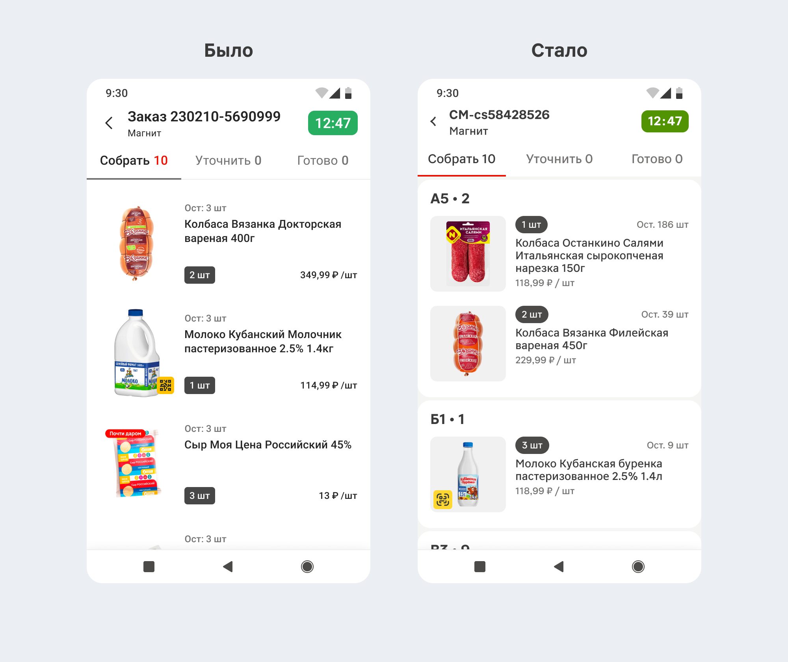
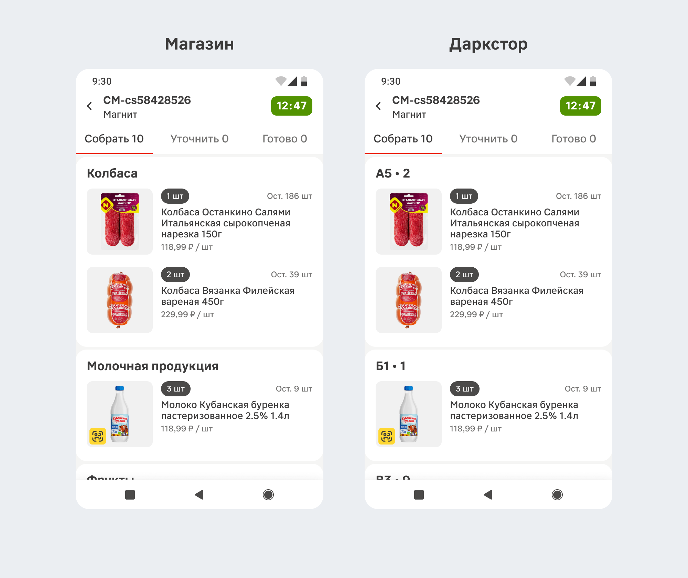
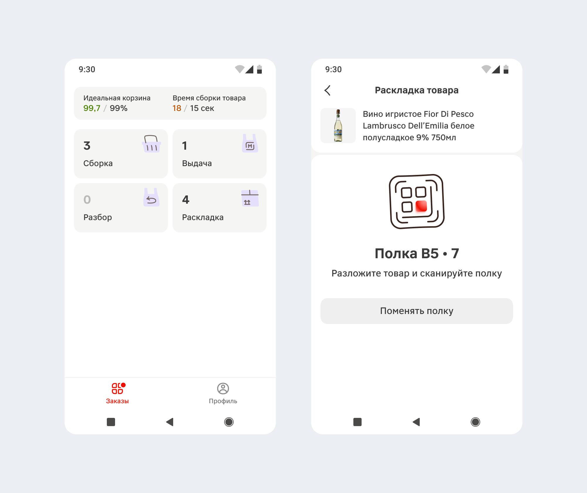
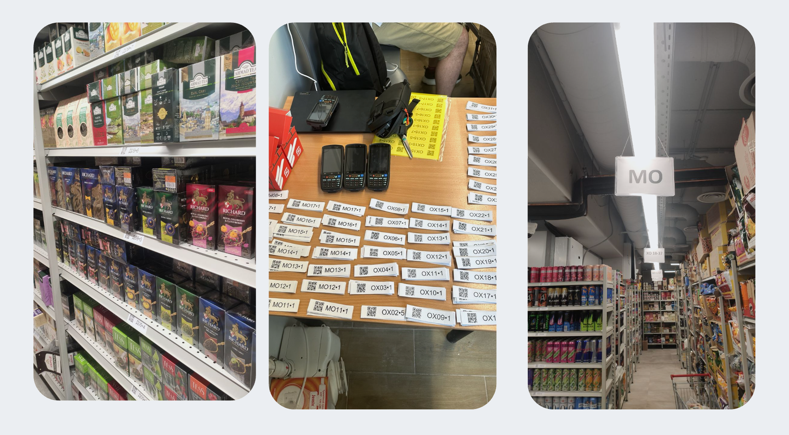
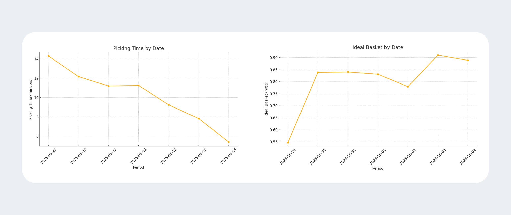

Проблема
Товар хранится хаотично и так же выводится в интерфейсе. Чтобы собирать заказ быстро нужно знать склад наизусть — сборка зависит от опытных сотрудников.
Что сделал
Ресерч
Изучил типовой крупный даркстор, предложили варианты маркировки полок. Команда операций определила логичное расположение по товарным группам, определили механику с маркировкой полок QR-кодами.
Концепт и тесты
Подготовил 2 флоу для тестирования интерфейса: раскладка товара при его приёмке и группировка товаров в заказе на сборку. Обсудили внутри команды, подготовили логичный флоу для демонстрации и показали сборщикам. Получил фидбэк и доработал интерфейс.
Передача в разработку
Получившиеся флоу разложил на итерации и оформил макеты к передаче в разработку. По мере внедрения тестировал функциональность в магазине, подготовиливал доработки.
Что получилось
До и после
Проект по группировке и навигации объединили по переезду экрана заказа на дизайн-систему — обновился стиль, техническая база. По части фичи с навигацией, появилась разбивка с указанием полок, на которых лежат товары. Теперь мы указыаем где они, выстраиваем порядок для быстрой сборки и объединяем товары вместе, если они с одной полки.

Магазины и дарксторы
В магазинах сложрнее с нацигацией, но я уч\л их группировку по категориям, чтобы в списке товары из одной категории были не разбросаны по всему списку, а группировались рядом.

Раскладка
Добавился раздел с раскладкой, который доступен из нового меню, в котором располагатся все типы заданий для сборщиков. В новом разделе можно раскладывать товары при приёмке на склад по нужным полкам, чтобы при сборке всё лежало на своих местах. Сканируя принимаемый товар мы показываем куда его нужно отнести.

В дарксторе
Поменялась расположение товарных групп. Сделали маркировку полок с QR-кодами, которые нужно сканировать при приёмке и раскладке товара.

Результат
В пилотных дарксторах идеальная корзина (соответствие заказа клиента и финальной сборки) выросло на 15%, время сборки заказа снизилось в 2 раза.
